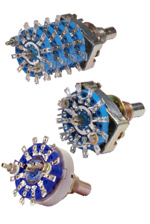
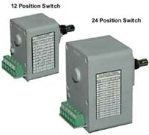
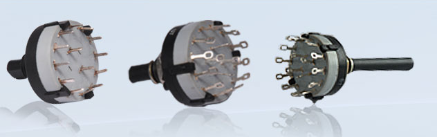
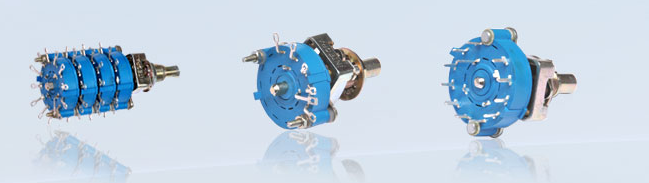
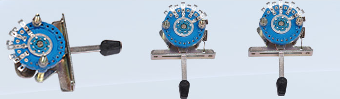
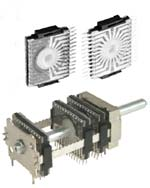
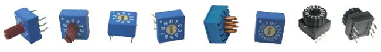

| Rotary Switches | |

|
Series 23
Description: Integral Series 23 Professional Grade Rotary Switches are ideally suited for use in Industrial and Laboratory equipments, as they provide a dust-free splashproof enclosure of the contacts. Wiping self cleaning contacts with a smooth gold plated ball-contact result in long term reliability and consistent quality. Variety of switching configuration meet most of the design requirements of the user. Assembly options are possible with the use of spacers, shields etc. and permit custom built switches. ‘O’ ring sealing is available for both spindle and panel
FEATURES:
|
|  |
Series 25
Description: Integral Series 25 Professional grade Rotary Switches are ideally suited for use in Industrial and Laboratory equipments. Double wiping self cleaning contacts and choice of excellent dielectric materials and suitable plating finishes result in long term reliability and consistent quality. An almost infinite variety of switching configuration meet most of the design requirements of the user. Assembly options are possible with the use of spacers, shields, etc. and permit custom built switches. 'O' ring sealing is available for both spindle and panel mounting bush. The balanced pressure indexing mechanism provided by 2 balls housed in a steel base provides smooth positive action with consistent and repeatable torque.Switches type equivalent to JSS 51207 available. FEATURES
|
|  |
Series 37
Description: Integral Series 37 Rotary Switches are manufactured
using an innovative approach to achieving quality
through Design. The Rotary Motion is used through
cams, to operate Micro Switches of high reliability and
long life.
|

|
Series 45
Description: Integral Series 45 Professional Grade Rotary Switches are ideally suited for use in Industrial and Laboratory equipments. Double wiping self cleaning contacts and choice of excellent dielectric materials and suitable plating finishes result in long term reliability and consistent quality. An almost infinite variety of switching configuration meet most of the design requirements of the user. Assembly options are possible with the use of spacer / shields etc. and permit custom built switches. ‘O’ ring sealing is available for both spindle and panel mounting bush. The balanced pressure indexing mechanism provided by 2 balls housed in a engineering thermoplastic housing provides smooth positive action with consistent and repeatable torque. FEATURES:
|
|  |
Series 92
Description: Integral Series 92 is a Miniature Rotary Switch of 25 mm Dia., offering premium quality at economical price. The design of the Switch is limited to a single section with solder/pc terminals. These are totally enclosed switches offering the most popular combination as encountered in modern electronic circuits. Uniform, positive indexing is provided by 2 balls housed in an Engineering Plastic case. FEATURES:
|
|  |
Series 93
Description: Integral Series 93 is a Miniature Rotary Switch of 26.5 mm Dia offering premium quality at economical price. These are totally enclosed switches offering the most popular combination as encountered in modern electronic circuits. Uniform, positive indexing is provided by 2 balls housed in a sheet metal base plate or Engineering Plastic Housing & with a ground metal shaft of 6.3 mm. |
| Lever Switches | |
|  |
Series 25
Description: Integral Series 25 ILS Lever switch takes minimum space behind the panel and makes operation from the front very convenient. Variations in the lever design permit standard 2 to 3 position and spring return action. For fixing purposes M 2.5 tapped holes are provided or alternately 3.2 mm clear holes can be provided. FEATURES:
|
| Rotary Switches PCB Type | |
|  |
Series 35
Description: Integral Series 35 Rotary Switch - PCB type is designed to be used directly in PC FEATURES:
|
| Rotary Dip Switches | |
|  |
Series 89
Description:
|